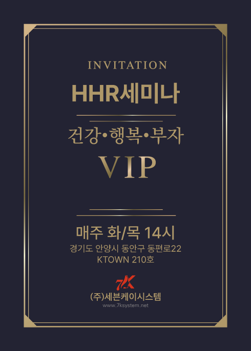

세포 재생에 필수 요소입니다.
피부에 영양분을 배달합니다.
피부 노폐물을 배출시킵니다.
70여종의 미네랄과 필수 아미노산을 공급합니다.
손상된 세포를 복원하고 노화를 방지합니다.
피부에 부작용을 일으키지 않습니다.
세포를 활성하며 촉진합니다.
면역을 증강시킵니다.
항암, 항염, 항균 작용을 합니다.
노화를 방지합니다.
피부재생 능력이 뛰어납니다.
피부에 부작용을 일으키지 않습니다.
성분의 촉매 역할을 합니다.
외부자극으로 부터 피부를 보호합니다.
피부 보습과 윤기를 지켜 줍니다.
칼슘과 마그네슘이 풍부합니다.
세포재생에 필요한 역할을 합니다.
피부에 부작용을 일으키지 않습니다.

강렬한열감(바디용) 우수한 사용감과 높은 피부 침투력으로 문제 있는 부위를 빠르게 케어합니다. 얼굴을 제외한 두피부터 발끝까지 사용 가능합니다.

부드러운열감(바디용) 몸의 흐름을 원활하게 도와주고, 따듯하게 유지해주는 제품으로 신체의 림프절이 모여 있는 부위나 또는 원하시는 부위에 발라줍니다.

온열은 말초혈액순환의 개선, 신진대사의 촉진, 진통, 근긴장 저하 등의 작용이 있으므로 관절 류머티즘 ·신경통 ·근육통, 그 밖의 각종 만성염증, 피로회복 등에 사용됩니다.
강력한열감(바디용) 따뜻한 열감이 피부 깊숙이 침투하여 건강하고 매끈한 피부로 만들어 줍니다.

정제수와 베타글루칸,풀빅산,산호초 그리고 식물성 염증분해 효소가 첨가된 천연특허 공법으로 만들어진
립케어를 치약대신으로 하루 세번 사용해 보세요!
립케어(RIP CARE) 신선하고 부드러운 느낌이 있어
청량하고 상쾌한 느낌을 줍니다.
베타글루칸,풀빅산,산호초의 보습과 항염 작용으로 눈물샘 주변 림프와 모공을 확장하는데 도움을 주어,
눈의 자가세정을 돕고, 눈물이 자연스럽게 목으로 넘어가도록 도와줍니다.
눈을 감은 상태로 눈 주변에 하루 5~10회 자주 뿌려 주어
눈 주변을 청결하게 하며 순환을 도와 줍니다.
수축,청결,활력(Y-ZONE) 청량하고 산뜻한 느낌의
여성전용 제품으로 탁월한 진정효과가 있습니다.
냉증 냄새 세균을 완벽히 없애주고 수축작용 효능
신궁크림을 0,5~0.8ml 궁에 넣어주고 밖에 마사지 해줍니다
일주일 동안 1일 2회 사용해줍니다.

남성 강한활력(Y-ZONE)에너지가 다운되고 무기력할 때 컨디션 회복에 도움을 주며, 활력과 생기를 불어넣어주는 남성전용 스프레이 제품입니다.
전립선,발기부전,치질관리 효과.
제품을 1일 5회 이상 자주 뿌려주고 관리해줍니다.

아토피(스킨케어) 면역케어 밸런스를 맞춰주는 생약성분으로 피부에 영양과 수분을 깊게 흡수시켜줍니다.
제품 젤을 2~3회 펌핑 후 마사지 해준 후 미지근한 물로 싯어줍니다.
팔콘 제품으로 건강하고 하얀 피부를 만들어 보세요!

올인원 페이스 스킨케어 특허받은 앰플 성분이 풍부히 첨가되어 있어 세포 하나하나 영양을 줌과 동시에 충분한 보습력과 눈에 즉시 보이는 화이트닝과 아데노신을 강화하여 주름개선 기능을 가지고 있습니다.
천연 유기물질 풀빅산의 아미노산과 치마버섯에서 추출한 베타글루칸을 배합하여 항산화 작용, 염증, 향균, 해독 효과를 만들었습니다.
|  |
{kind=link}
{kind=link}
© All rights reserved. • 7K System •